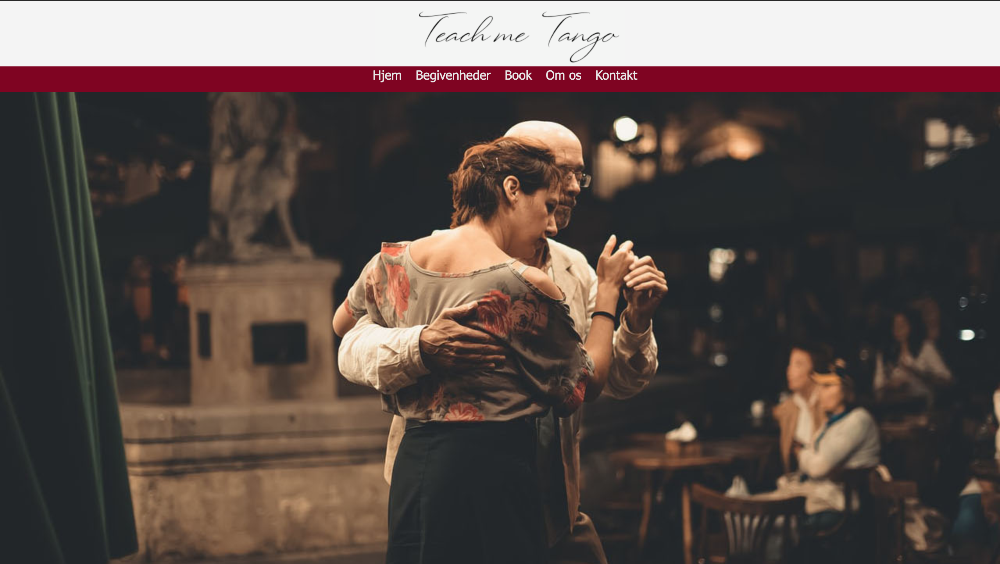
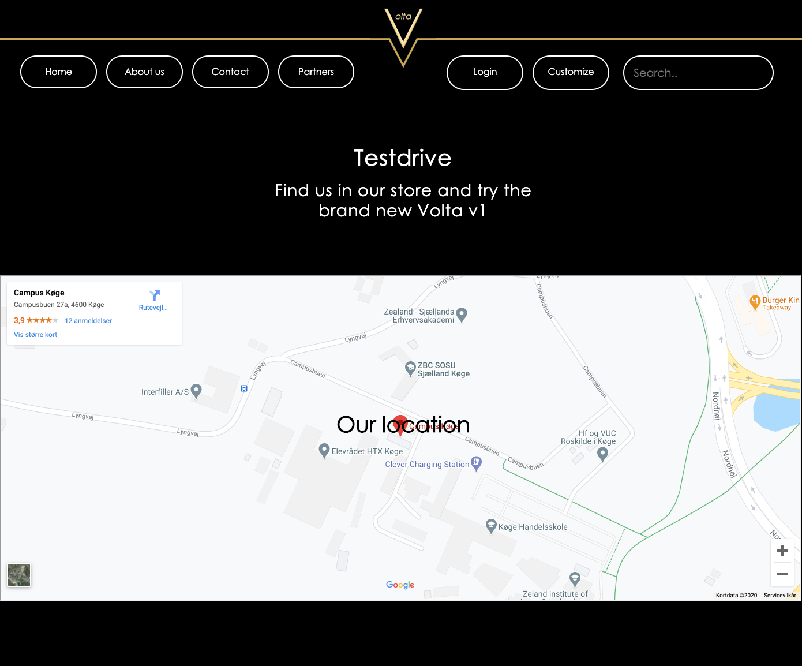

Rumrejsen

Rumrejsen er et fiktivt projekt, som gik ud på at konceptudvikle ideer til salg af rejser ud i rummet. Kun fantasien satte grænser her. Vores opgave var at lave et koncept og et website. Da det var vores første projekt Havde vi ikke fokuseret på grupperoller. Men jeg stod for "om os" siden
Dans Dans Dans
Til Dans Dans Dans fik vi tildelt en specifik dans, hvor vi fik tango dans. Vi havde til opgave at lave et website for en danseskole. Derefter skulle vi overlevere projektet, til en anden gruppe. Vi modtog også selv et nyt projekt, som vi skulle bygge videre på. Her fik vi zumba dans. Min rolle i gruppen, var specialist, og jeg stod for holdsiden.
Bag rattet
Bag rattet er et projekt, som handler om at skabe et koncept,
Og udvikle en salgsplatform. Konceptet skulle være branding af biler,
Og senere skulle vi markedsføre vores koncept, på de sociale medier.
Mine roller i gruppen var Idemand, Afslutter og Organisator. Derudover stod jeg for
kontaktsiden.
Video
Video er et projekt, som handler om at producere en kort digital video. Her skulle vi lave en præsentation af vores makker. Vi lærte at producere video, og benyttede os af adobe Premiere Pro til at redigere i. Derudover lærte vi også om filmiske virkemidler, og grundelementer.